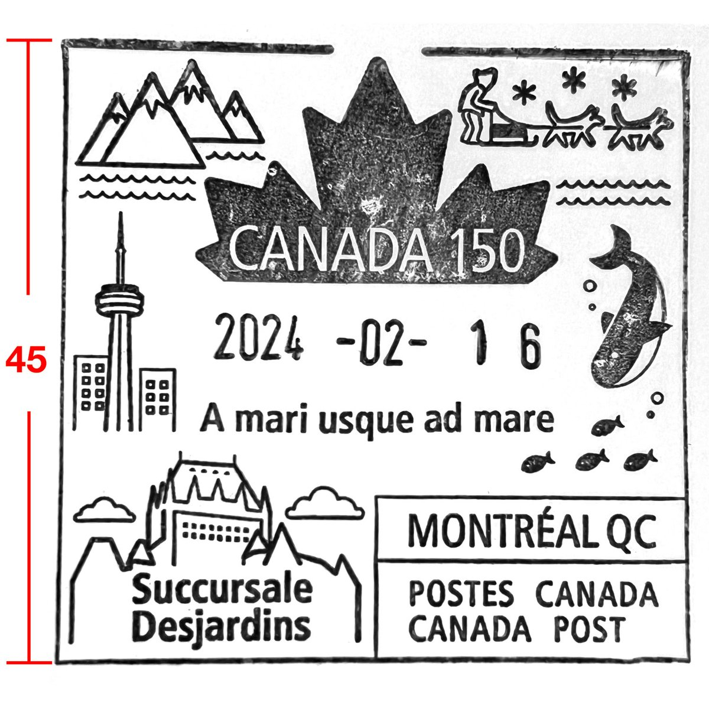

BP Montréal PL-Desjardins pictorial cancel
A mari usque ad mare – Succursale Desjardins · Canada 150
- Status
- Expired
- Run dates
- 2014-01-01 to 2025-12-31
- Design
- "A mari usque ad mare / Succursale Desjardins"; Canada's 150th anniversary; mountains, maple leaf, sled dogs; Toronto CN Tower, whale; Château Frontenac in Quebec City
- Ink colour
- Black
- Designer
- Unknown
- Post office
- BP Montréal PL-Desjardins
5 Complexe Desjardins
Montreal, QC
H5B 1A0 - Subjects
- Canada 150, celebration, anniversary, landmark, architecture, building, animal, whale, dog, mountain, nature
This cancel is retired, so the post office can no longer apply it. Covers with it turn up from dealers and other collectors.
 BP Montréal PL-DesjardinsHeart
BP Montréal PL-DesjardinsHeart BP Montréal PL-DesjardinsPhilatelic association
BP Montréal PL-DesjardinsPhilatelic association BP Montréal PL-DesjardinsCaribou
BP Montréal PL-DesjardinsCaribou BP Montréal PL-DesjardinsMontreal 375
BP Montréal PL-DesjardinsMontreal 375 BP Montréal PL-DesjardinsCryistallography
BP Montréal PL-DesjardinsCryistallography